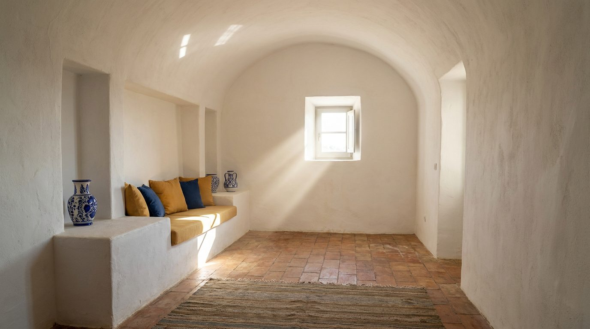

Atlante · IT-09 · Italia · Sud
Villa mediterranea in calce e archi
Esempi · esterno e interno


Architettura · elementi riproducibili
- muri in calce bianca 50-60 cm, archi a tutto sesto, volte a botte o a stella, nicchie
- pavimento in cotto o graniglia
- altezza 3,5-5 m
- aperture piccole e profonde che creano cornici
- terrazze con pergolati
- Proporzione: archi stretti e alti (rapporto 1:2,2).
Luce
sole diretto e alto, ombre nette e corte; il set va illuminato di taglio per far leggere lo spessore dei muri.
Prompt di generazione (EN)
Mediterranean whitewashed villa, thick lime-plastered walls, sequence of round arches and barrel vaults, terracotta floor, deep window reveals, high midday sun with short hard shadows, cobalt-blue and terracotta accents, 24 mm, bright airy grade.